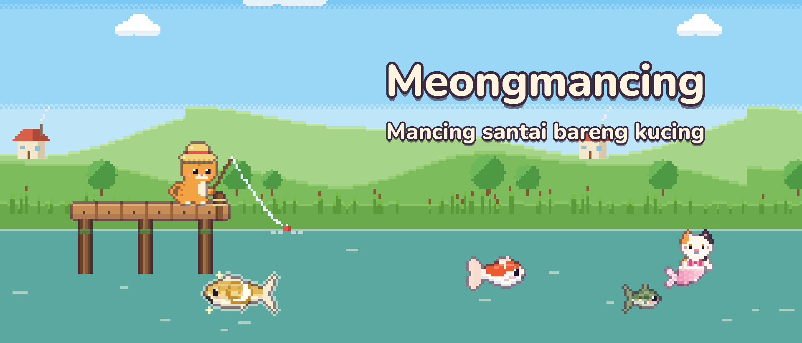
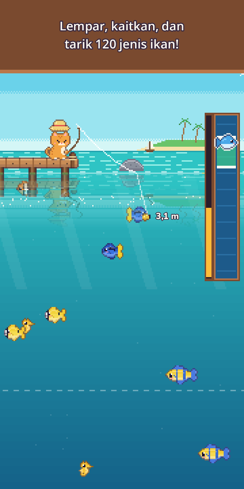
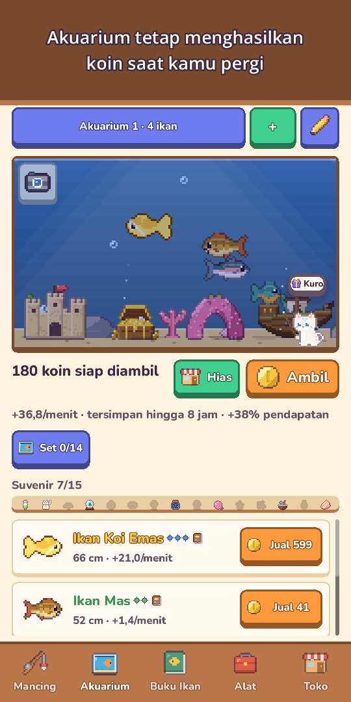
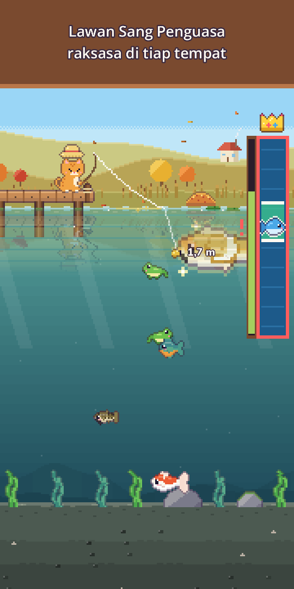
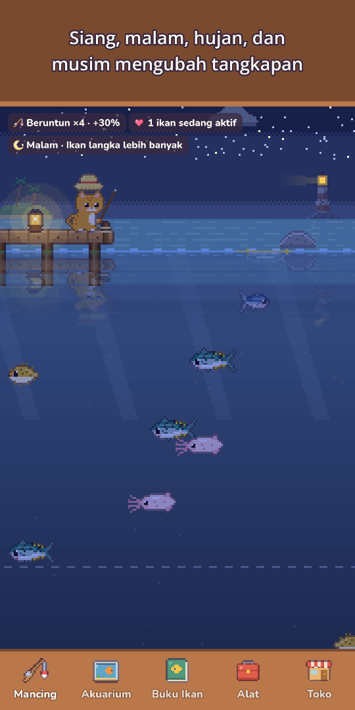
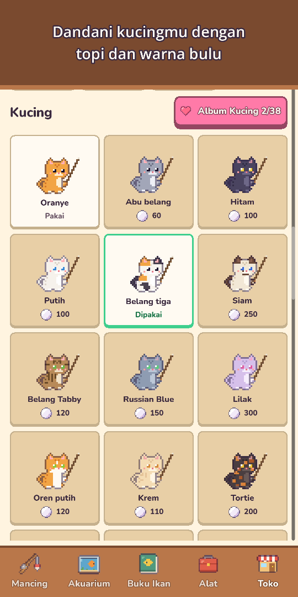
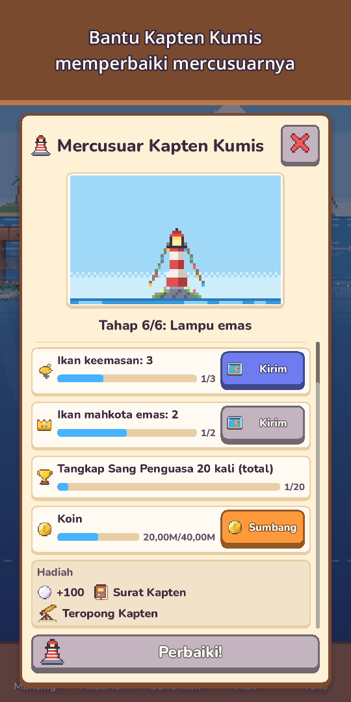
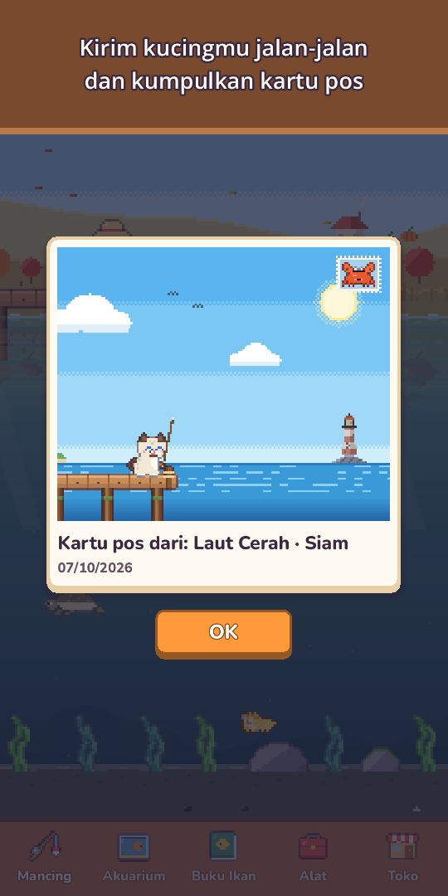

Meongmancing: Mancing Piksel
Mancing santai bareng kucing
Bawa joran dan baju selam! Pancing 120 jenis ikan, menyelam untuk memotret makhluk laut, dan temui kucing duyung langka.







Ambil jorannya, kucing kecil — airnya penuh kejutan!
Meongmancing adalah game mancing piksel yang santai dan bisa dimainkan dengan satu jempol. Lempar kail, arahkan umpan ke ikan yang terlihat berenang di bawah air, lalu tarik dengan bar tangkapan yang seru.
- Mancing satu jempoltahan untuk melempar, geser untuk mengarahkan umpan, tahan untuk menarik. Ketuk saat pelampung tenggelam untuk start lebih cepat (opsional), lengkap dengan riak air, cipratan, getaran, dan koin yang terbang ke dompetmu
- 120 jenis ikan di 10 lokasiKolam Padang Rumput, Sungai Gunung, Laut Cerah, Terumbu Karang, Danau Beku, Laut Dalam, Kuil Tenggelam, Danau Awan, Pulau Gunung Api, dan Hutan Bakau
- Buru ikan Emas langka, kawanan ikan langka, dan legenda seperti Ikan Mas Rembulan dan Paus Bintang, lalu lawan Sang Penguasa raksasa di tiap tempat sekali sehari
- Menyelampakai baju selam, berenang di tiap tempat untuk memotret makhluk yang tak bisa dipancing demi Album Foto, dan temukan gua dalam tersembunyi dengan senter
- Kucing duyungdi tiap tempat ada satu kucing duyung, lebih langka dari legenda mana pun. Bawa ke akuarium atau lepaskan untuk berkat keberuntungan
- 25 umpan dalam 5 tingkatumpan bagus memikat ikan lebih langka, umpan khusus memanggil duyung dan legenda, dan ikan kuat bisa memutus senar pancingmu!
- Langit yang hidupsiang dan malam mengikuti jam perangkat, hujan, salju, dan pelangi mengubah tangkapan, bintang jatuh memberi mutiara, sementara musim dan fase bulan asli mengubah pemandangan. Tiap tempat punya prakiraan 6 jam, dan riak emas berkilau menandai ikan besar
- Buku Ikanbanyak ikan punya waktu favorit (malam, hujan, fajar, atau musim), tangkapan terbesarmu meraih Mahkota emas, dan tiap tangkapan pertama mengingat langitnya: waktu, cuaca, musim, dan tempat
- Akuariumikanmu menghasilkan koin bahkan saat kamu tidak bermain. Hias dengan Kapal Karam, Lengkung Karang, dan lainnya, lengkapi Set Akuarium untuk pemasukan ekstra, bagikan Tata letak akuarium dengan kode pendek, dan ketuk ikan untuk melihat asalnya dan sudah berapa hari kalian bersama
- Hidup kucing & koleksitopi dari Topi Katak sampai Mahkota, warna bulu, topi musiman, dan Pojok Kucing yang nyaman. Kirim kucing keluarga Jalan-jalan kucing 3 jam untuk kartu pos piksel, lalu baca Buku harian kucing saat kamu kembali
- Tetangga & festivalkucing tetangga mampir ke akuarium dan meninggalkan suvenir, dan Persahabatan membawa obrolan baru, hadiah kecil, dan topi sahabat. Turnamen mingguan, Mancing bareng tiap bulan, Ikan tamu minggu ini, dan 5 festival setahun (Sakura, Musim Panas, Halloween, Natal, Tahun Baru) dengan cap untuk dekorasi eksklusif milikmu selamanya
- Baca surat dalam botol dari Kapten Kumis, kucing tua penjaga mercusuar, dan bantu memperbaiki mercusuarnya
- Berkembang sesuai tempomutingkatkan Joran, Reel, Senar, Umpan, dan Akuarium, buat umpan dari ikan tangkapan untuk mengincar jenis itu (kecuali legendaris), plus Misi Harian, Hadiah Harian (terlewat sehari? Progres tetap aman), dan hadiah untuk hari-hari bersama
- Ekstra santaimode pemandangan menyembunyikan tombol supaya kamu bisa menikmati pemandangan saja, Jurnal memancing menyimpan Album foto berisi 12 foto terakhir akuarium dan Pojok Kucing, dan tiap hari teman kecil bersembunyi di pemandangan demi mutiara
- Bisa dimainkan offline, kapan saja
Gratis dimainkan, dengan pembelian opsional: paket Mutiara, Paket Pemula, dan Paket Pendukung (hadiah tanpa nonton iklan, topi Mahkota, dan batas penghasilan offline dua kali lipat). Semua 120 jenis ikan bisa ditangkap tanpa keluar uang.
Tanpa iklan paksa dan tanpa banner. Iklan hanya hadiah opsional yang kamu pilih sendiri, misalnya untuk menjual ikan dua kali lipat.
Santai, lempar kailmu, dan lihat ikan apa yang menyambar hari ini!